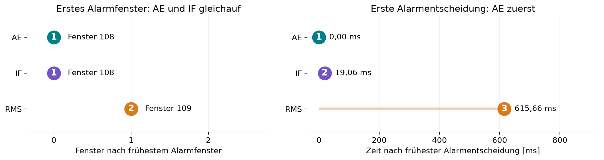

| Methode | Erster Alarm | Alarmfenster |
|---|---|---|
| Autoencoder | 108 | 11 |
| Isolation Forest | 108 | 7 |
| RMS | 109 | 6 |
591 gültige Entscheidungen · 0 verworfene Fenster
Gleiche Rohwerte und Fenstergrenzen nachgeprüft.
AE und IF: erstes Alarmfenster 108.
RMS: erstes Alarmfenster 109.
AE-Ausgabe rund 19 ms vor IF.
RMS-Ausgabe rund 616 ms nach AE.
Relative Ausgabeabstände dieses Laufs, keine gemessene Verzögerung ab physischem Vibrationsbeginn.
